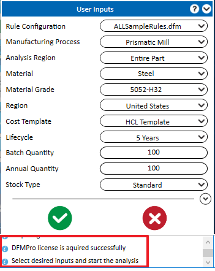
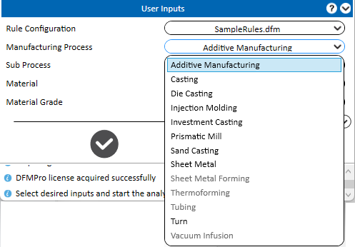
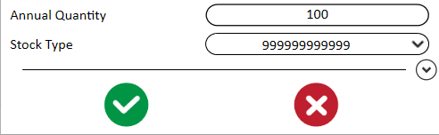
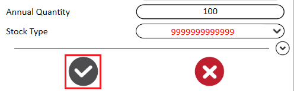
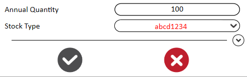

DFMPro メニューの  Start DFMPro をクリックして、DFMPro ユーザーインターフェースを開きます。
Start DFMPro をクリックして、DFMPro ユーザーインターフェースを開きます。
ユーザー入力のグループボックスで、パーツ／アセンブリを解析するために必要な入力値とパラメータを 追加／変更 します。
DFMPro は、実行に進む前に、ユーザーインターフェース下部に設計者向けの提案／必要なアクションを表示します。
ユーザー入力のグループボックスでは、必要に応じて入力値を追加／変更できます。
DFMPro メニューの Start DFMPro をクリックして、DFMPro ユーザーインターフェースを開きます。
ユーザー入力のグループボックスで、パーツ／アセンブリを解析するために必要な入力値とパラメータを 追加／変更 します。
DFMPro は、実行に進む前に、ユーザーインターフェース下部に設計者向けの提案／必要なアクションを表示します。
このグループボックスでは、必要に応じて入力を定義できます。

ルールファイル構成: ドロップダウンリストからルールファイルを参照して構成します。
製造プロセス: ドロップダウンリストから適切な製造プロセスを選択します。
Note:
ルールファイルで選択されたルールに基づき、対応する製造プロセスが実行可能として表示され、その他の製造プロセスは無効化されます。

ルールファイルで一般ルールが選択されている場合、すべての製造プロセスが実行可能として表示されます。
解析領域: 製造プロセスとして Prismatic Mill が選択されている場合に表示されます。種類は次の 2 つです:
材料: ドロップダウンリストから適切な材料を選択します。
材料グレード: ドロップダウンリストから適切な材料グレードを選択します。
地域: 製造施設の所在地をドロップダウンリストから選択します（サポートされる地域は US、Europe、China、India です）。
Note:
以下に示す入力オプションのうち、地域（Region）までの項目はコスト計算に必要です。すべての入力値はパーツコストの算出に考慮されます。ただし、実行に必要なのは Manufacturing Process と Material の入力のみです。
コストテンプレート: ドロップダウンリストから適切なレポートテンプレートを選択します。DFMPro では、Cost Administration Vault を通じてテンプレートの追加または変更が可能です。
Note:
コストテンプレートは Cost ライセンスが利用可能な場合にのみ表示されます。そうでない場合、このオプションは無効化されます。
ライフサイクル: ドロップダウンリストから製造のライフサイクル年を選択します。
切断プロセス: 既定の切断プロセスが表示されます。ドロップダウンリストから必要な切断プロセスを選択します。
キャビティ数: 既定では 1 が表示されます。ドロップダウンリストからキャビティ数を選択します。
工具（ツーリング）コスト:
バッチ数量: 1 バッチで製造されるパーツ数を入力します。
年間数量: 年間を通じて製造されるパーツ数を入力します。
ストック種別: 製造プロセスとして Prismatic Mill が選択されている場合に表示されます。ドロップダウンリストから指定の Stock type を選択するか、ストック数を定義します。ドロップダウンリストには 5 種類の Stock Type があります。既定では常に Standard が選択されます。
Custom オプションが選択されると、ユーザーは加工に必要となる金額を入力できます。たとえば通貨が USD に設定されているときに 1000 を入力すると、材料費として 1000 USD がそのまま考慮されます。
Note:
金額（数値）は 12 桁を超えて入力しないでください（例: 999999999999）。追加の数字を入力しようとすると、DFMPro は警告として数値を赤色（RED）で表示し、以下の画像のように Analysis ボタンを無効化します。


数値の代わりに他の変数を入力しようとすると、DFMPro は警告として変数を赤色（RED）で表示し、それらは解析されません。

アセンブリ解析: 製造プロセスとして Assembly が選択されている場合に表示されます。種類は次の 2 つです:
切断プロセス: 製造プロセスとして Sheet Metal が選択されている場合にのみ表示されます。その他の必要入力は Prismatic Milling と同じです。切断プロセスは 4 種類あります: Default、Water Jet、Laser、Plasma Cutting。
既定では、切断プロセスに Water jet が設定されています。ドロップダウンリストから必要な切断プロセスを選択します。
サブプロセス: 製造プロセスとして Additive Manufacturing が選択されている場合に表示されます。サブプロセスの種類は Default、FDM (Fusion Deposition Modeling)、SLS (Selective Laser Sintering)、SLA (Stereolithography) です。
Additive Manufacturing プロセスには、以下に示す 3 種類のルールがあります:
1) 材料およびサブプロセスに依存しない
2) 材料固有
3) プロセス固有
ドロップダウンリストから必要な Sub Process を選択します。既定ではサブプロセスに Default が選択されます。DFMPro は選択に基づき、Additive Manufacturing のルールおよび該当するサブプロセス固有ルールで解析を実行します。
DFMPro の実行に進むにはクリック  。
。
DFMPro の実行をキャンセルするにはクリック 。